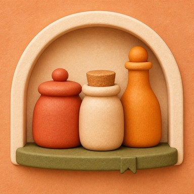

TASTOCK
Bring a flavor you don't know yet
to everyday cooking.
Harissa, chili crisp, yuzu kosho — the day you buy it is the best part, and then it sits at the back of the cupboard until the date has passed. TASTOCK logs each bottle with just a name and tells you which is closest to its best-before date. When one runs out, your rating and memos stay. No account, no ads.
iOS 18.0 or later / iPhone
Four app screens. 1. Seasonings "Soonest to expire, always on top — No sorting to do. Days left as both a number and a color." 2. Collection "Used the last drop? The record stays — Ratings, tags and notes, ready when you spot that jar again." 3. Reminders "Before it expires, a reminder arrives — Choose the time and how many days ahead. All of it free." 4. Add "Logging a bottle takes just a name — Add the best-before date and tags whenever you get to them."
Six tools for using what you buy
-
Just the name is enough
The name is the only thing you have to fill in. Add the best-before date and tags whenever you get around to it. You can log a bottle before you’ve even unpacked the bag.
-
Soonest to expire, always first
The list is always sorted by best-before date — there is no sorting to do. It shows the days left — like “4 days” — alongside a color, so it still comes through if colors are hard to tell apart. Turn reminders on in Settings to be notified as the date gets close.
-
Keep a memo
Something as short as “rubbed it on chicken thighs and roasted them” is enough. Each collection entry holds one memo. Next time you reach for the same bottle, what you made before is waiting in your collection.
-
Taste scales you define yourself
“Heat,” “how aromatic,” “goes with rice” — whatever suits you. You name the scale and set where the bottle falls on it. Your overall impression is kept separately as an overall rating.
-
Keep a list of ones you’re curious about
Your collection has “Tried” and “Wishlist.” Save a jar you spotted in a shop to your Wishlist, and the moment you buy it and log it, it moves to Tried on its own.
-
The record outlives the bottle
Bottles with matching names link to the same collection entry automatically. When one runs out, the overall rating, taste scales, tags, and memos all stay behind in your collection. There is no limit on how many bottles of the same seasoning you can keep.
More entries in your collection, higher limits for taste scales, categories, and tags, five color themes, switching the appearance between automatic, light, and dark, and exporting and importing your records are available with TASTOCK Pro. See Support for details.
Your records stay on your device
Your seasoning names, ratings, tags, and memos are stored only on your device. Nothing syncs to another device and nothing is sent to our servers. The only external communication is purchase processing for the paid plan and anonymous usage measurement (first launch, recorded as an installation, app launches, updates, moves between foreground and background, opening the paid plan screen, and purchase and restore actions and their results). See the Privacy Policy for details.
Turn that back-of-the-shelf bottle into tonight’s dish.
Common questions are answered on the support page. Contact: tempuraapps.support@gmail.com